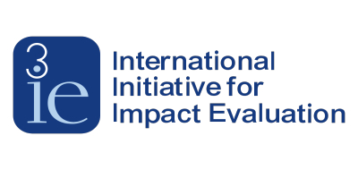
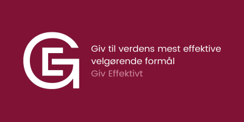
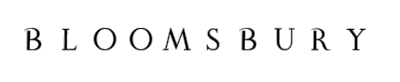
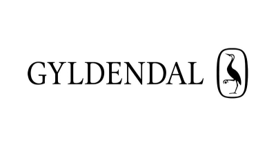

Arbejdserfaring tæller bl.a. adfærdsforskning, dataanalyse og statistik, forfattervirksomhed, konsulent– samt bestyrelsesarbejde.
Klinisk forsøgsdesign og -analyse
Dataanalyse | Projektledelse | Kvalitet i sundhedssektoren

Økonometri | Systematisk review | Meta-analyse

Omkostningseffektanalyse | Evidensbaseret filantropi

Adfærdspsykologi | Kulturel evolution | Antologiredigering
Bayesisk statistik | Kausal inferens | Kultur- & adfærdspsykologi
Populærvidenskab | Skeptisk tænkning | Konspirationsteorier
Evolution & intelligens | Databaseopbygning | Statistisk analyse

Populærvidenskab | Videnskabspoesi | Religionspsykologi